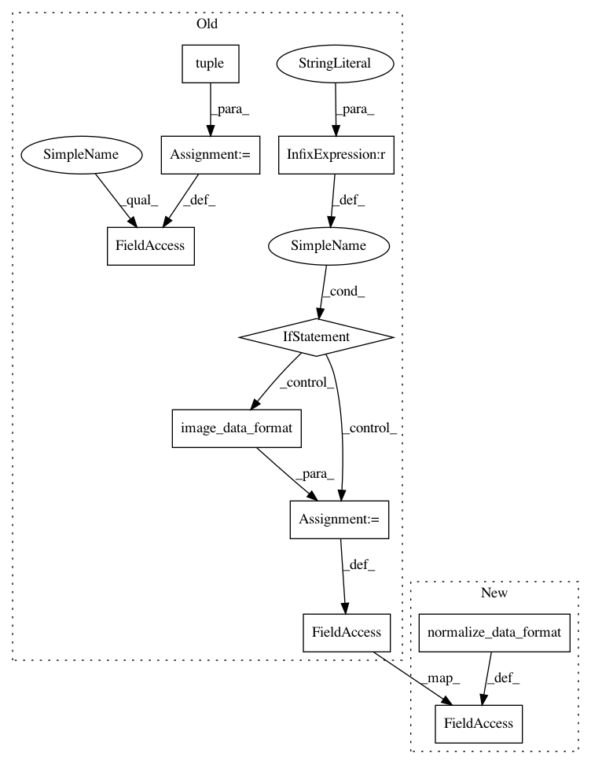

023331ec2a7b0086abfc81eca16c84a1692ee653,keras/layers/convolutional.py,UpSampling3D,__init__,#UpSampling3D#Any#Any#,1387
Before Change
def __init__(self, size=(2, 2, 2), data_format="default", **kwargs):
if data_format == "default":
data_format = K.image_data_format()
self.size = tuple(size)
if data_format not in {"channels_last", "channels_first"}:
raise ValueError("data_format must be in {"channels_last", "channels_first"}.")
self.data_format = data_format
self.input_spec = [InputSpec(ndim=5)]
super(UpSampling3D, self).__init__(**kwargs)
After Change
def __init__(self, size=(2, 2, 2), data_format=None, **kwargs):
self.data_format = conv_utils.normalize_data_format(data_format)
self.input_spec = [InputSpec(ndim=5)]
super(UpSampling3D, self).__init__(**kwargs)
def get_output_shape_for(self, input_shape):
In pattern: SUPERPATTERN
Frequency: 3
Non-data size: 10
Instances
Project Name: keras-team/keras
Commit Name: 023331ec2a7b0086abfc81eca16c84a1692ee653
Time: 2017-02-09
Author: francois.chollet@gmail.com
File Name: keras/layers/convolutional.py
Class Name: UpSampling3D
Method Name: __init__
Project Name: keras-team/keras
Commit Name: 023331ec2a7b0086abfc81eca16c84a1692ee653
Time: 2017-02-09
Author: francois.chollet@gmail.com
File Name: keras/layers/convolutional.py
Class Name: Cropping2D
Method Name: __init__
Project Name: keras-team/keras
Commit Name: 023331ec2a7b0086abfc81eca16c84a1692ee653
Time: 2017-02-09
Author: francois.chollet@gmail.com
File Name: keras/layers/convolutional.py
Class Name: Cropping3D
Method Name: __init__